Pentru a va crea un cont, trebuie sa apasati butonul "Sign Up" aflat pe pagina principala a site-ului.
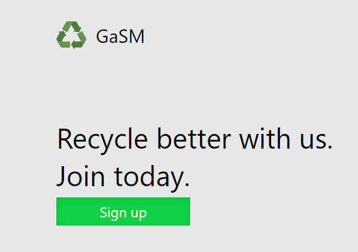
Fig.1 - Butonul "Sign Up"
Dupa apasarea butonului de "Sign Up" veti fi redirectat catre pagina ce va va permite sa va creati un cont.
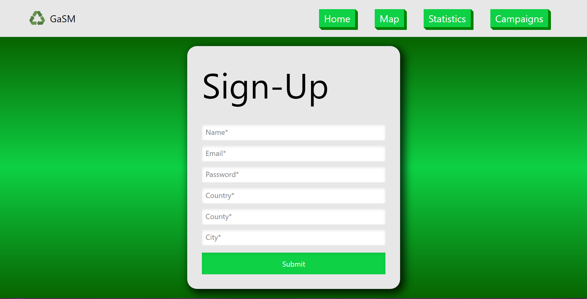
Fig.2 - Pagina de Sign Up
Aici va trebui sa completati toate campurile cu informatii valide, respectand constrangerile impuse referitoare la formatul datelor ce trebuie introduse.
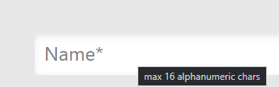
Fig.3 - Exemplu de astfel de constrangere
Daca informatiile introduse intr-un camp sunt valide, campul respectiv va arata astfel:
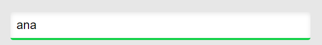
Fig.4 - Exemplu camp ce contine date ce respecta formatul specificat
Daca informatiile introduse intr-un camp sunt invalide, campul respectiv va arata astfel(in acest caz va fi necesara completarea acestuia cu date valide, ce respecta formatul precizat):
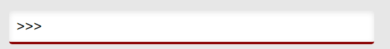
Fig.5 - Exemplu camp ce contine date ce nu respecta formatul specificat
Dupa completarea tuturor campurilor cu date valide, ce respecta formatul specificat, apasati butonul "Submit".
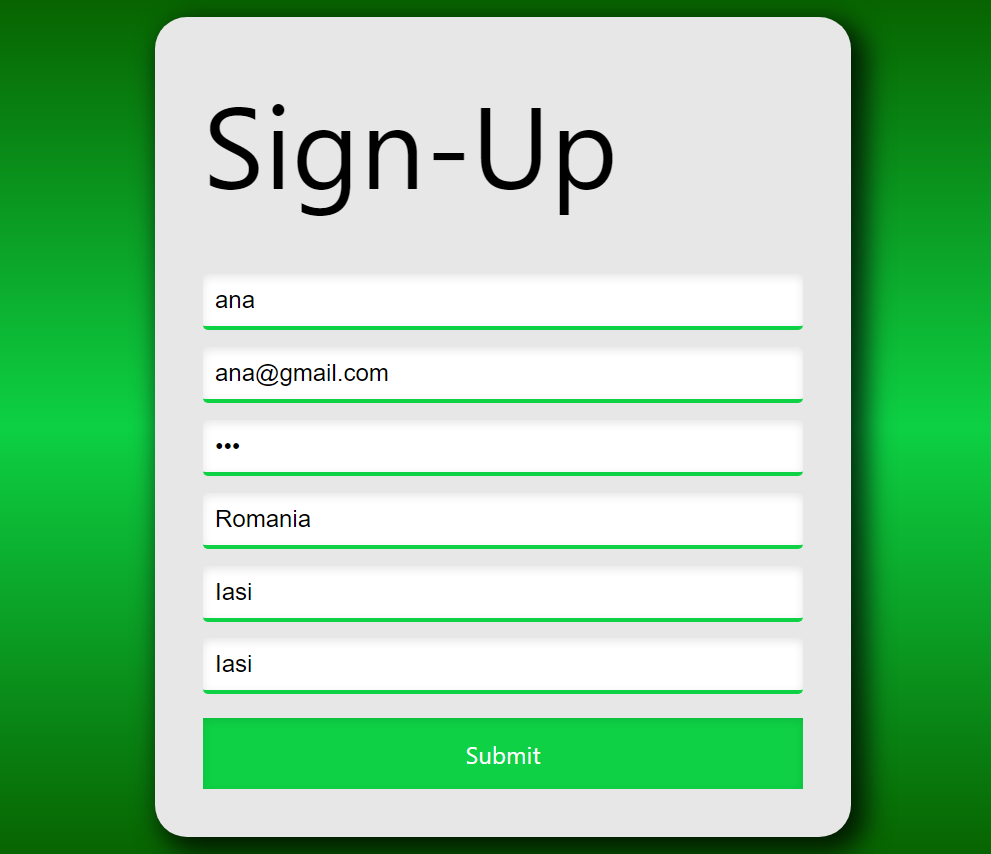
Fig.6 - Butonul "Submit"
Daca numele introdus apartine altui utilizator, veti ramane pe aceeasi pagina, si va va aparea un mesaj ce va va specifica acest lucru.
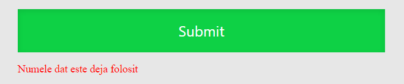
Fig.7 - Mesajul ce apare daca numele introdus apartine deja altui utilizator
Daca numele introdus nu apartine niciunui alt utilizator, contul va fi creat si veti fi redirectionat pe pagina principala unde va veti putea autentifica.
Autentificare
Pentru a va autentifica, trebuie sa va introduceti numele si parola contului in campurile specificate, aflate in stanga butonului "Login" de pe pagina principala.
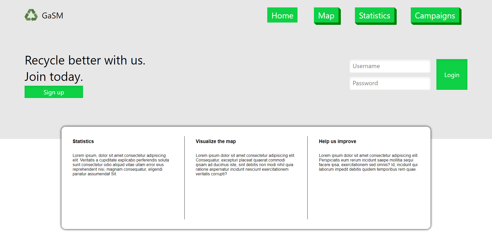
Fig.8 - Pagina principala a site-ului cand nu sunteti autentificat
Acestea vor trebui sa respecte un format anume(acelasi format ca cel a campurilor corespunzatoare lor din pagina de Sign Up).
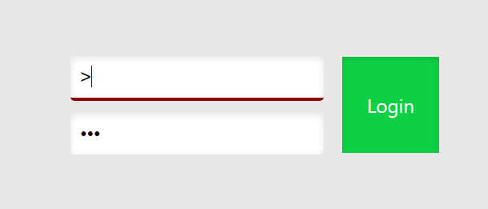
Fig.9 - Date invalide ce nu respecta formatul specificat
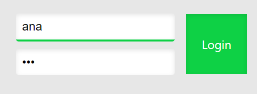
Fig.10 - Date valide ce respecta formatul specificat
Dupa completarea acestor campuri cu date valide, va trebui sa apasati butonul "Login".
Daca datele introduse corespund unui cont creat, va veti autentifica cu succes si veti fi redirectionati pe o pagina foarte similara cu aceasta, de unde va veti putea deconecta daca doriti.
Daca datele introduse nu corespund vreunui cont creat, veti ramane pe aceeasi pagina si veti putea incerca sa va conectati din nou.
In acest caz, va va aparea un mesaj informativ:
Fig.11 - Mesajul ce va va aparea daca numele si/sau parola introduse sunt gresite, necorespunzand vreunui cont
Deconectare
Daca v-ati autentificat cu succes, pagina principala a site-ului va arata astfel:
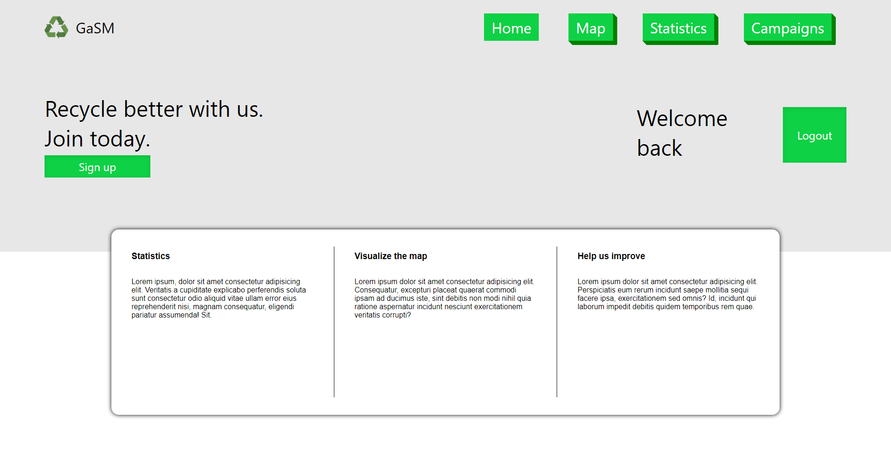
Fig.12 - Pagina principala a site-ului cand sunteti autentificat
Apasand butonul "Logout" va veti putea deconecta si veti fi redirectionat pe pagina principala, de unde va puteti loga din nou.(eventual cu alt cont)
Campanii
Vizionare
Pentru a vedea toate campaniile deja existente, trebuie sa apasati butonul "Campaigns" situat in partea de dreapta sus a site-ului.
Acest buton se va regasi in acest loc pe toate paginile site-ului, iar efectul sau va fi acelasi:
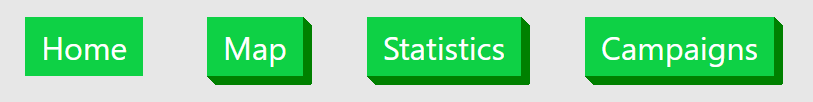
Fig.13 - Butonul "Campaigns"
Odata apasat acest buton, veti fi redirectionat pe o pagina unde veti putea vedea toate campaniile existente deja, in mod paginat, cate 2 pe o pagina, sau doar 1 daca nu mai sunt 2 campanii de afisat.
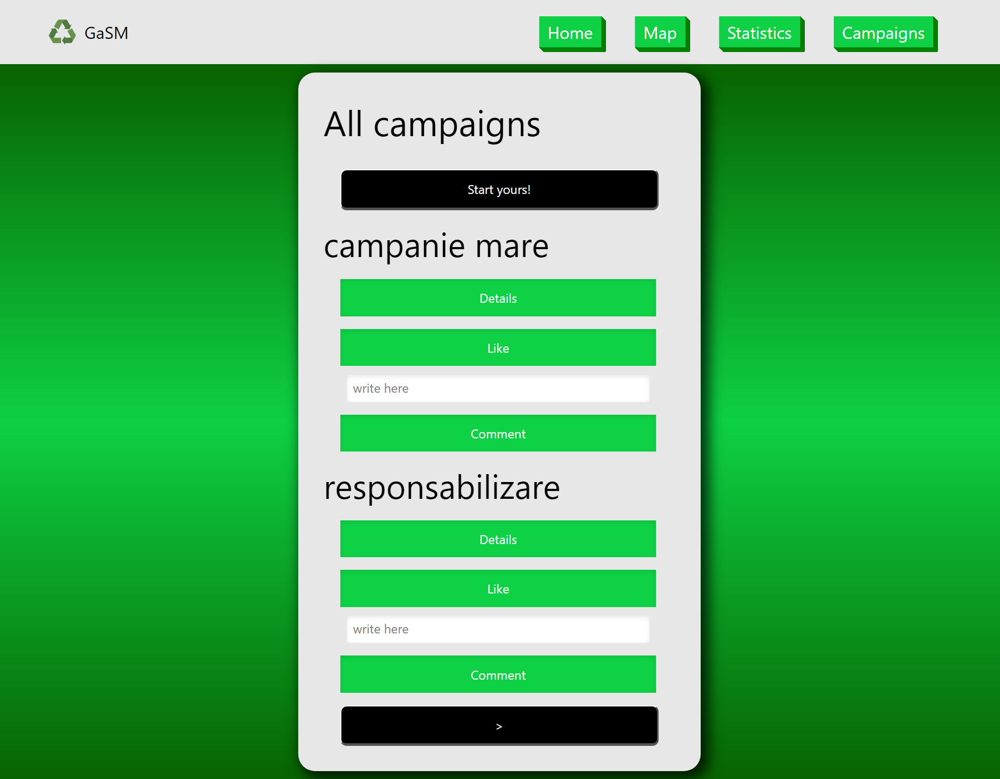
Fig.14 - Pagina ce contine toate campaniile
Totodata, de pe aceasta pagina, veti putea apasa butonul "Start yours!" care va va redirectiona pe o pagina de unde veti putea crea o campanie noua.
Butoanele ">" si "<" vor putea fi folosite pentru a naviga printre pagini.
La apasarea unuia dintre ele veti fi redirectat cu o pagina in urma/in fata.
Butonul ">" va avea semnificatia de "next page" in timp ce butonul "<" va avea semnificatia de "previous page".
Acestea vor aparea in josul paginii curente, doar daca exista cel putin o pagina in urma("<") si doar daca exista o pagina in fata. (">")
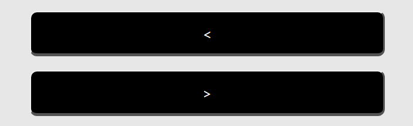
Fig.15 - Butoanele ">" si "<" folosite pt. a naviga intre pagini ce contin campanii
Interactionare
Veti putea aprecia o campanie, prin apasarea butonului "Like" din dreptul ei dar si sa lasati un comentariu respectivei campanii, cu ajutorul butonului "Comment" si a campului de deasupra lui.
Veti putea aprecia campanii/lasa comentarii lor doar daca sunteti auntetificat.
Pentru a lasa un comentariu unei campanii, va trebui sa introduceti un text ce respecta formatul cerut in campul de deasupra butonului "Comment" din dreptul acelei campanii.
Formatul necesar este specificat la hover deasupra respectivului camp.Aveti voie sa folositi maxim 250 caractere alfanumerice, cat si caractere precum !,.: etc.
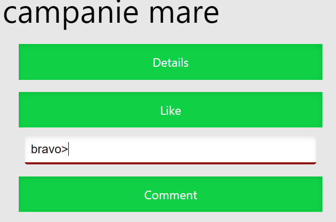
Fig.16 - Asa va arata campul daca comentariul introdus nu este valid
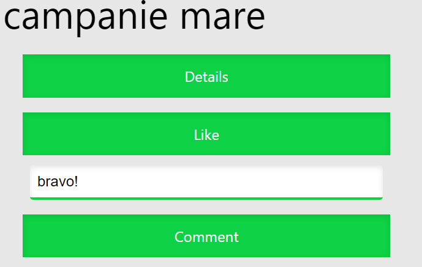
Fig.17 - Asa va arata campul daca comentariul introdus este valid
Daca comentariul introdus este valid si nu sunteti autentificat, atunci comentariul introdus nu va fi postat respectivei campanii.
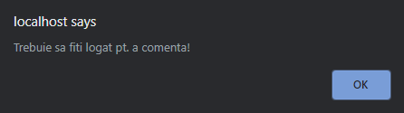
Fig.18 - Veti primi acest mesaj daca nu sunteti logat si incercati sa postati un comentariu unei campanii
Daca comentariul introdus este valid si sunteti autentificat, atunci comentariul introdus va fi postat respectivei campanii.
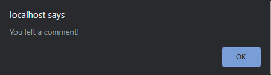
Fig.19 - Veti primi acest mesaj daca sunteti logat si incercati sa postati un comentariu unei campanii
Daca apasati butonul "Like" din dreptul unei campanii si nu sunteti autentificat, like-ul nu se va contoriza respectivei campanii.
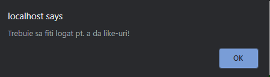
Fig.20 - Veti primi acest mesaj daca nu sunteti logat si incercati sa apreciati o campanie
Daca apasati butonul "Like" din dreptul unei campanii si sunteti autentificat, like-ul se va contoriza respectivei campanii.
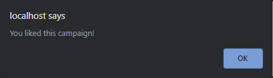
Fig.21 - Veti primi acest mesaj daca sunteti logat si incercati sa apreciati o campanie
Detalii
Pentru a vedea toate detaliile legate de o campanie si toate comentariile postate ei, puteti apasa butonul "Details" de sub numele respectivei campanii:
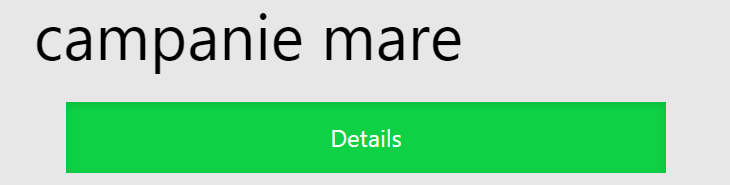
Fig.22 - Butonul "Details"
Dupa apasarea acestui buton veti fi redirectionat pe pagina ce contine toate aceste informatii.
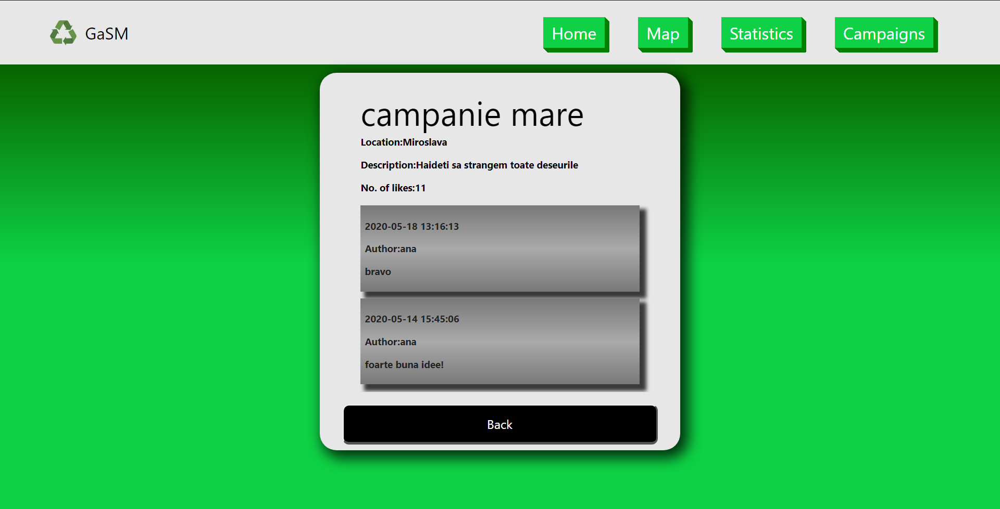
Fig.23 - Pagina ce contine toate detaliile unei campanii si toate comentariile postate ei
Pentru a va intoarce pe pagina anterioara, puteti apasa butonul "Back" situat in partea inferioara a acestei pagini.
Creare
Puteti sa creati o noua campanie apasand butonul "Start yours!" de pe pagina ce contine toate campaniile existente.
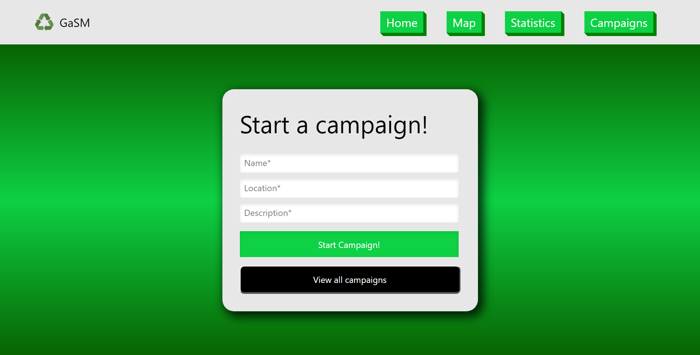
Fig.24 - Pagina ce va permite sa creati o noua campanie
Pentru a crea o noua campanie, trebuie sa completati toate campurile, avand grija sa respectati formatul cerut.(puteti vedea care este acesta facand hover peste campul respectiv)
De exemplu, numele campaniei poate contine maxim 25 caractere alfanumerice.
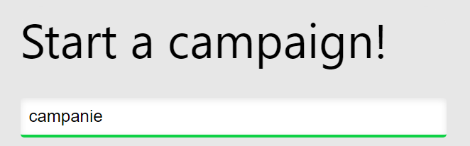
Fig.25 - Camp completat cu date ce respecta formatul cerut
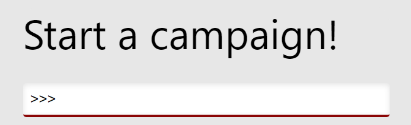
Fig.26 - Camp completat cu date ce nu respecta formatul cerut
Dupa completarea tuturor campurilor in mod valid, apasati "Start Campaign!".
Daca numele campaniei nu este folosit deja de o alta campanie, campania va fi creata si veti fi redirectionat pe pagina ce contine toate campaniile create pana acum.
Daca numele campaniei este deja folosit de alta campanie, campania nu va fi creata si veti ramane pe aceasta pagina.
In acest caz, va va aparea un mesaj cu rosu imediat deasupra butonului "Start Campaign!" ce va va informa de acest lucru.
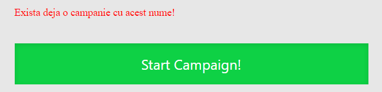
Fig.27 - Mesajul care apare daca numele dat campaniei este deja folosit de alta campanie
Daca v-ati razgandit si nu mai doriti sa creati o noua campanie puteti, de exemplu,sa apasati butonul "View all campaigns" care va va redirecta la pagina ce contine toate campaniile existente.
Harta
Marker
Adaugare
Pentru a adauga un marker utilizatorul selecteaza unul din butoanele din stanga hartii dupa care face click pe harta
Fig.28 - Butoanele ce pot fi selectate pentru a adauga un marker
Stergere
Pentru a sterge un marker, daca utilizatorul este administrator atunci ii va aparea un buton in plus in coltul din stanga sus al hartii.
Dupa ce face click pe acesta, administratorul poate selecta o regiune sub forma unui dreptunghi tinand apasat click stanga pe mouse. Dupa
ce intrerupe click stanga, toate markerele din dreptunghiul selectat vor fi marcate ca sterse.
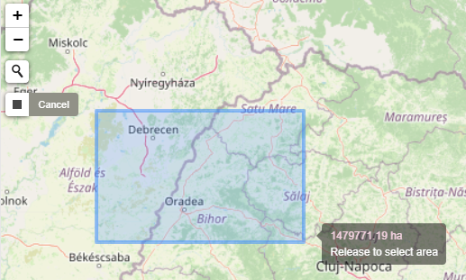
Fig.29 - Butonul impreuna cu dreptunghiul pentru stergerea markerelor
Vizualizare
Daca markerul nu se afla intr-un cluster group si se face click stanga pe acesta, va aparea un popup in care este specificat
cine a raportat deseul respectiv si cand
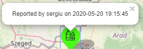
Fig.30 - Popup-ul cu informatii despre un marker
Daca markerul se afla intr-un cluster group se poate face click pe cluster group pentru a afisa markerele din interior si a face
zoom pe acestea
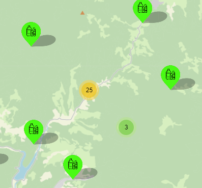
Fig.31 - Cluster group
Cautare Locatie
Utilizatorul poate cauta o locatie specifica folosind butonul din stanga sus al hartii (cel care are o lupa drept icon)
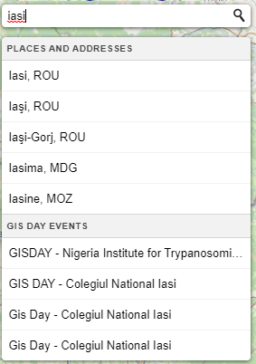
Fig.32 - Cautare locatii
Detectare Locatie
Utilizatorul va fi intrebat la incarcarea paginii daca doreste ca locatie lui sa fie aflata
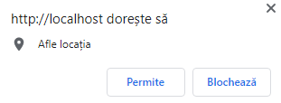
Fig.33 - Popup locatie
Daca utilizatorul accepta atunci pe harta vor aparea un cerc si un marker care reprezinta pozitia aproximativa unde se afla utilizatorul dupa care
se face zoom pe acestea. Daca utilizatorul refuza harta ramane neschimbata
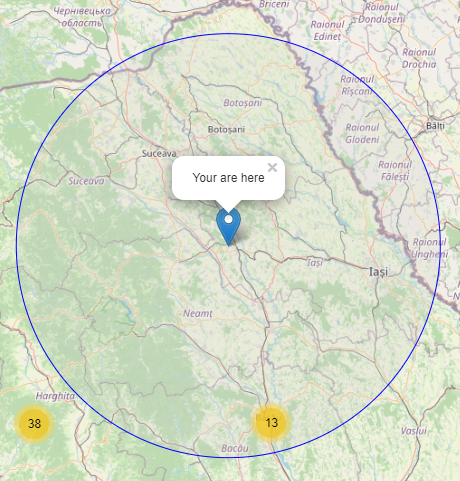
Fig.34 - Locatia utilizatorului
Tipuri Harta
Harta Statistici
Utilizatorul poate schimba tipul hartii intr-o harta cu statistici pe judete folosind butonul "Statistics Map" din partea dreapta a paginii Daca utilizatorul
se afla deja pe "Statistics Map" nu se va intampla nimic.
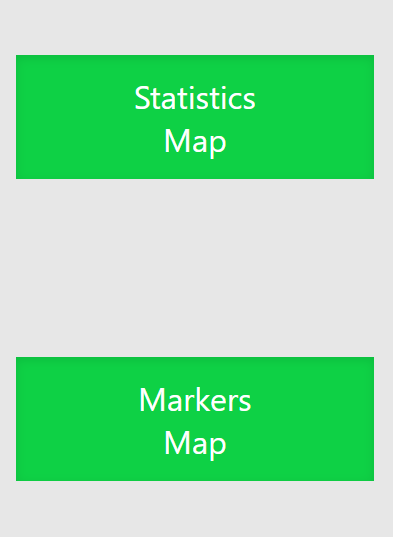
Fig.35 - Butonul "Statistics Map"
Fiecare judet va fi colorat in functie de cate deseuri se afla in judetul respectiv. In partea dreapta a hartii se poate regasi legenda culorilor
Daca utilizatorul pune mouse-ul peste un judet in partea dreapta sus a hartii va aparea un popup cu statistici despre judetul respectiv
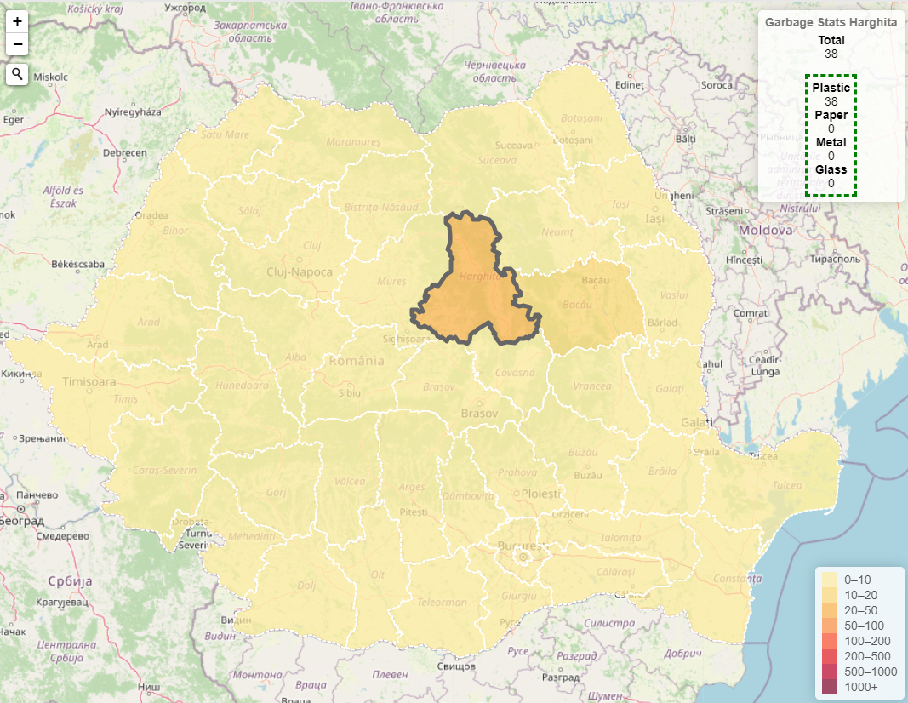
Fig.36 - Statistici judet
Harta Markere
Utilizatorul poate schimba tipul hartii la harta standard folosind butonul "Markers Map" din partea dreapta a paginii. Daca utilizatorul
se afla deja pe "Markers Map" nu se va intampla nimic.
Fig.37 - Butonul "Markers Map"
Statistici
Vizualizare
Pagina de statistici pune la dispozitie posibilitatea de vizualizare a diferitor statistici in formate grafice si numerice. Graficul dispune de scrollbar vertical si orizontal,
pentru o intelegere mai usoara acestuia. Tinind apasat click stanga pe grafic si miscand mouse-ul pe orizontala se poate face zoom pe o anumita portiune a graficului. De asemenea
in partea din stanga sus a graficului se afla un buton denumit "R" care va zoom-ul graficului.
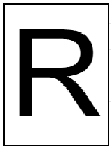
Fig.38 - Butonul de resetare a zoom-ului
Utilizatorul poate naviga pritnre grafice cu ajutorul butoanelor laterale.
Fig.39 - Butonul de navigare printre grafice
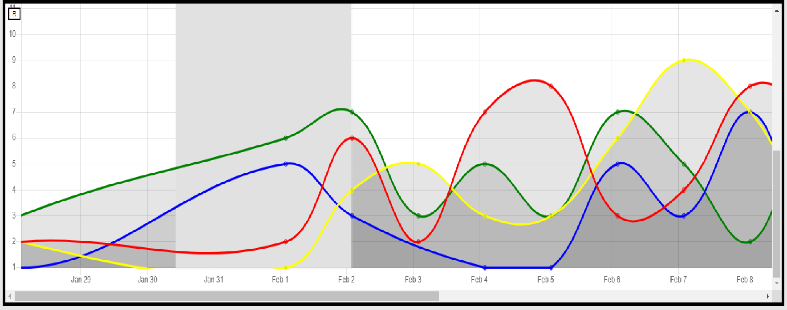
Fig.40 - Animatia de zoom asupra graficului
In partea de sus a graficului se afla legenda cu tipurile de gunoi afisate.
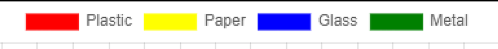
Fig.41 Legenda
La nivel de oras
La nivel de oras sunt disponibile 2 chart-uri, un line chart si un bar chart, ce au pe axa X timpul plasarii marker-ului si pe axa Y cantitea de gunoi raportata la acea data.
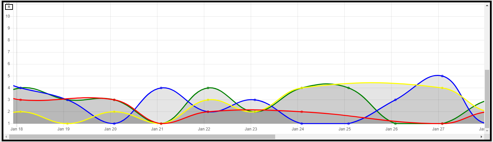
Fig.42 - Exemplu de line chart la nivel de oras
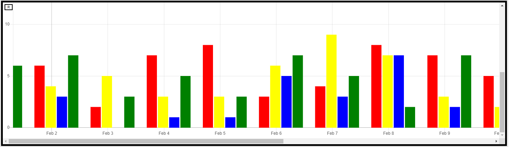
Fig.43 - Exemplu de bar chart la nivel de oras
La nivel de judet
Graficul la nivel de judet va apea pe axa X orasele judetului din care face parte utilizatorul si pe axa Y cantitatile de gunoi raportate ale fiecarui pras. Fiecare oras va fi reprezentat de o bara in grafic si fiecare categorie de gunoi
va avea propria ei culoare.
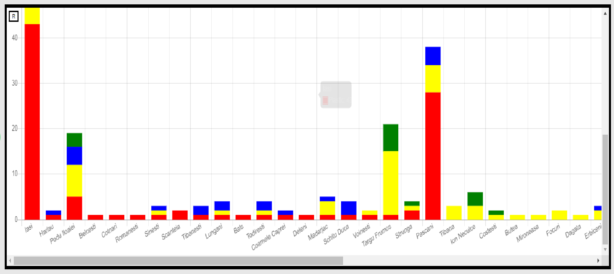
Fig.44 - Exemplu de bar chart la nivel de judet
La nivel de tara
Graficul la nivel de tara va apea pe axa X judetele tarii utilizatorului si pe axa Y cantitatile de gunoi raportate ale fiecarui judet. Fiecare judet va fi reprezentat de o bara in grafic si fiecare categorie de gunoi
va avea propria ei culoare.
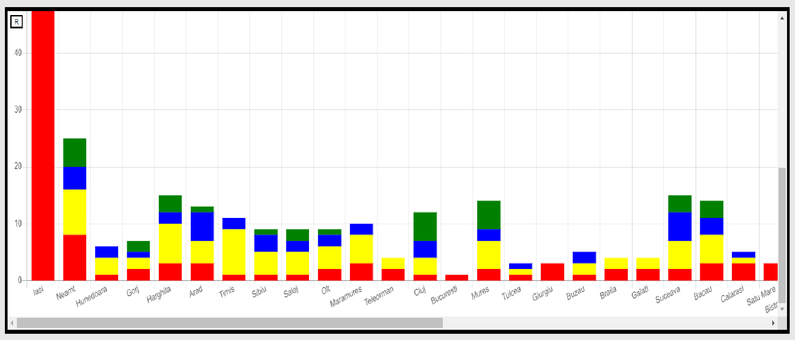
Fig.45 - Exemplu de bar chart la nivel de tara
Cantitea procentuala a categoriilor de gunoi
In partea din mijloc, in josul paginii, se afla un pie chart, ce reprezinta cantitatea procentuala a fiecarei categorii de gunoi, calculata cu markerele din intervalul de timp specificat din optiunea de filtrare.
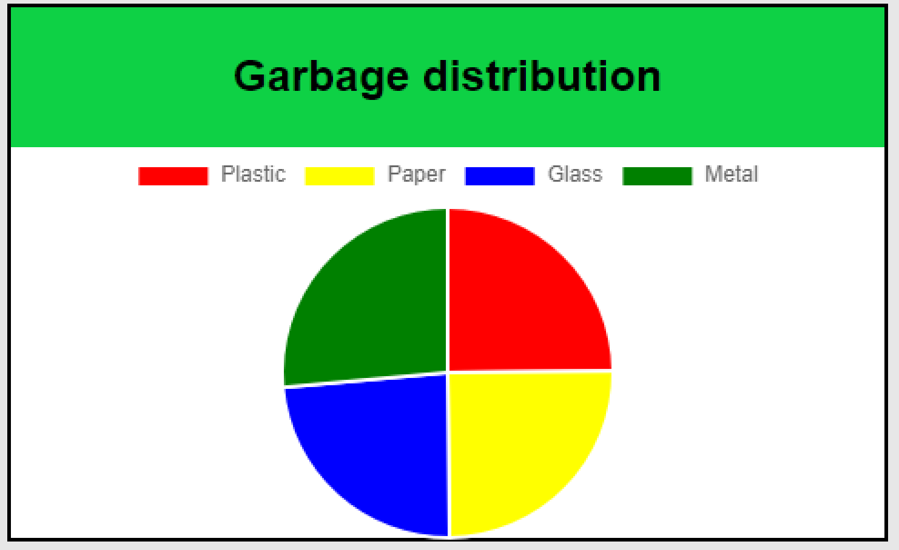
Fig.46 - Exemplu de pie chart
Schimbari pe unitate de timp
In partea din stanga jos a paginii se pot vizualiza diferite statistici ce evolueaza de-a lungul timpului. Schimbari in viteza de ridicare a markerelor, congestia la nivel de oras sau a numarului de raporturi.
Aceste schimbari sunt calculate prin compararea situatiei curente cu situatia anterioara. (de exemplu daca filtrul de timp ales este "Last Week" se va comapra situatia de saptamana aceasta cu situatia de acum 2 saptamani).
Daca schimbarile sunt pozitive in dreptul lor va fi afisata o sageata verde, iar daca sunt negative o sageata rosie.
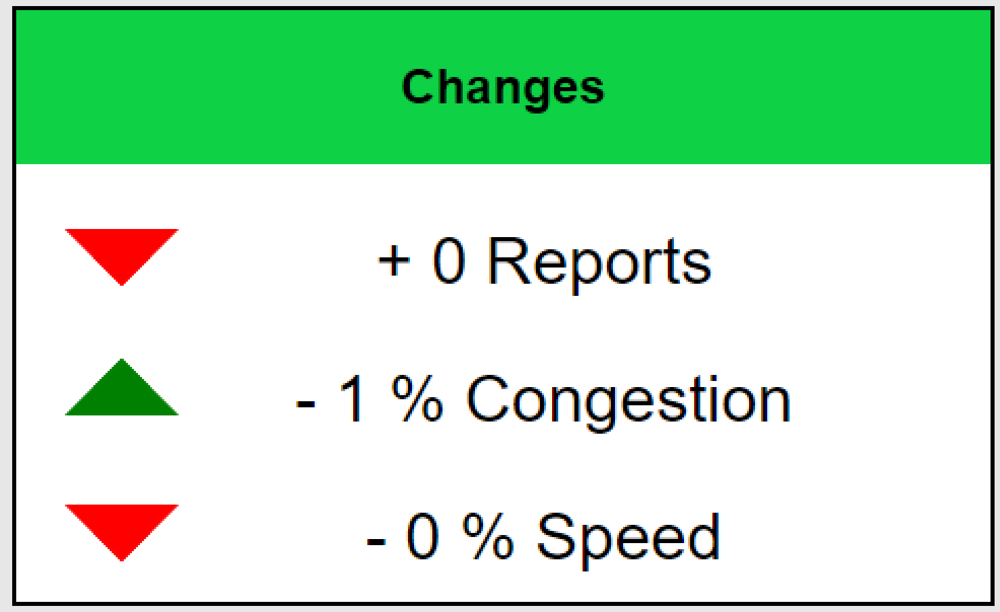
Fig.47 - Exemplu de statistici
Filtrare
Pe categorii de gunoi
Filtrarea pe categorii de gunoi va afisa, la apasarea butonului de "Filter" doar markerele care fac parte din categoriile selectate.
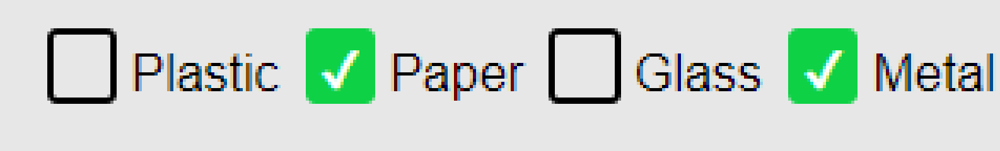
Fig.48 - Checkboxuri de filtrare
Pe unitate de timp
Sub grafic se afla o lista de optiune cu unitati de timp pe care utilizatorul le poate alege pentru a vizualiza grafice pentru datele din perioada respectiva.
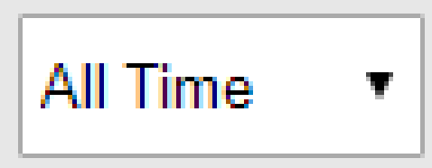
Fig.49 - Filtrare pe unitate de timp
Efectele filtrelor selectate vor avea loc dupa apasarea butonului oval denumit "Filter".
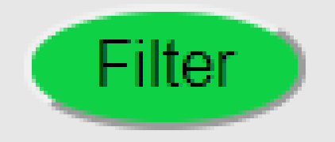
Fig.50 - Butonul de filtrare
Download
CSV
Butonul "CSV" va copia local datele despre markerele din intervalul de timp ales din optiunile de filtrare. Acest document poate fi deschis intr-un program precum Microsoft Excel.
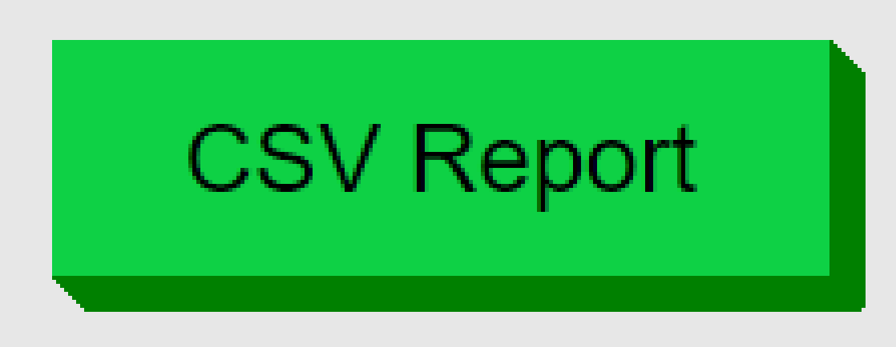
Fig.51 - Butonul de download pentru formatul CSV
HTML
Butonul "HTML" va copia local primele 2 grafice disponibile (cele la nivel de oras) si pie chart-ul din josul paginii. Partea de sus a documentului va specifica orasul si unitatea de timp pentru care a fost efectuat raportul. Mai jos se vor afla
cele 3 grafice, urmate de 2 liste care cuprind lista judetelor respectiv oraselor, ordonate in ordine crescatoare dupa numarul de rapoarte. Aceste lista vor evidentia cu verde zonele cele mai curate si cu rosu zonele cele mai mizere.
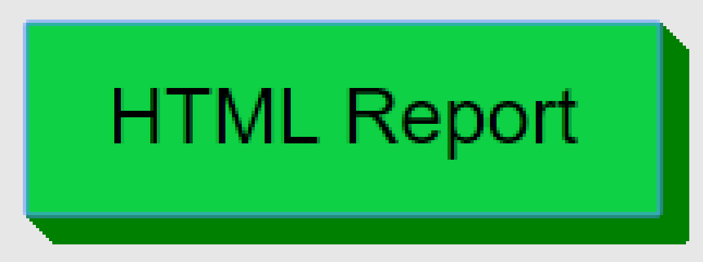
Fig.52 - Butonul de download pentru formatul HTML
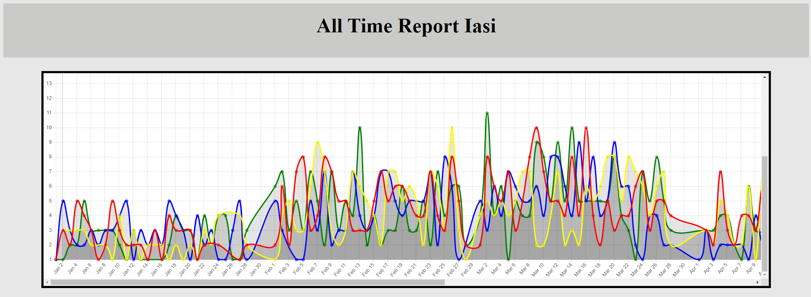
Fig.53 - Snapshot dintr-un document HTML
PDF
Butonul "PDF" va copia local cele 2 grafice ce se afla pe pagina la momentul apasarii butonului. Mai jos acesta va evidentia ca si documentul HTML zonele cele mai curate/mizare, iar in final va afisa lista de schimbari din stanga jos
a paginii in format text.
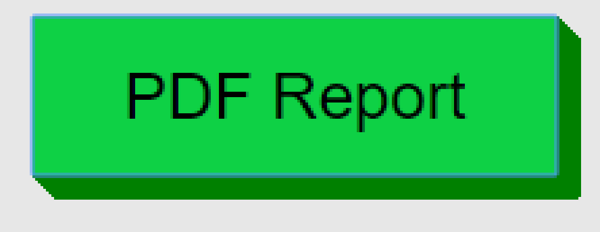
Fig.54 - Butonul de download pentru formatul PDFFig.55 - Snapshot dintr-un document PDF